My proposal is to build a laser tripwire prank toy. Something that could be set up, then beep when someone walks through the laser. This is a pranking toy, like a shocker pen or a whoopie cushion, but more techical. I will build it with 3 different circuits, one which activates the laser, one which monitors a photorecepter, and one which will emit a sound when triggered.
For this project I will need:
1 Laser
1 Photosensor
1 Speaker
Wire
Electrical Tape
2 Aligator Clips
Resistors
1 Arduino Board
1 Breadboard
I will need to purchase the laser, photosensor, and the speaker.
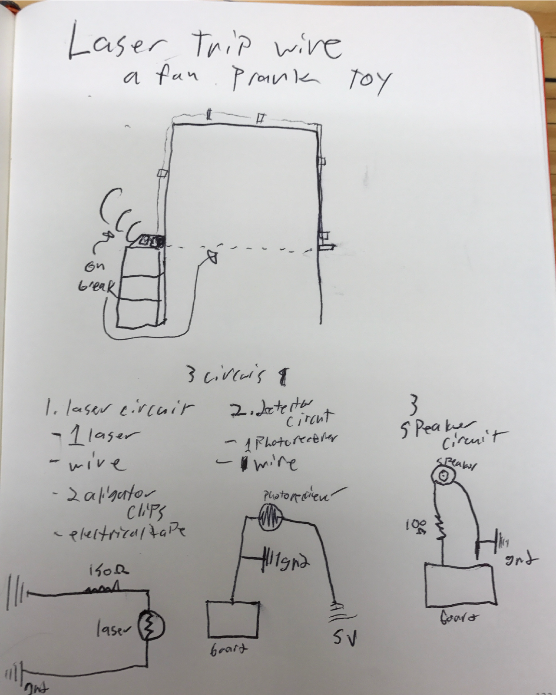
Lab Three
For this lab, we built a circuit using an Arduino board. This was a fun experiment as it allowed me the chance to work with programming the Arduino and did a good job of showing how useful the programmable board could really be. This uses two circuits, one which activates the board when the button is pressed, and one which lights up the diode when the first circuit is triggered. Check out the quick video of it working below.
Lab Two
This lab is focused on working with circuits and electricity. We learned about circuits in both parallel and in series. In parallel circuits, the current will divide itself but the voltage will be the same across all paths. In series, the current is the same throughout the circuit, but forward voltage must be taken into more consideration as forward voltage will add up and reduce the total amount of current in the circuit. For example, if I were to connect several LED's to a circuit, I would use a parallel circuit so that one LED failure would not break the entire circuit, as the current would be divided.
In this lab, I first created two breadboard circuits one with two LED's in parallel, one with the LED's in series. I used two resistors in my series circuit, because in parallel the 470 Olm resistors act as one 235 Olm resistor, which will give my circuit 20.4 mA worth of current, which is perfect for my LED's. Building a circuit on my protoboard was not that difficult, but my inexperience with soldering resulted in some mistakes, and the result was messier than I would have liked. But, I am sure I will continue to improve with practice.
My concept for an interactive device is the Laser Base. Much like a normal base guitar, but instead of frets and strings, this device will have buttons and lasers. This instrument would function kind of like a keyboard, in that it would allow the player to play sounds which are impossible to create with analog instruments. It could also be set up with pre-installed songs, so that one could strum randomly and play any song they wish. The buttons on the neck would either function like frets, or could change the sounds the base creates. The device would use four laser beams which would trigger a sound whenever the beam is broken. I am not a skilled guitarist so if I were to build this device, my aim would be for it be used similarly to a player piano.
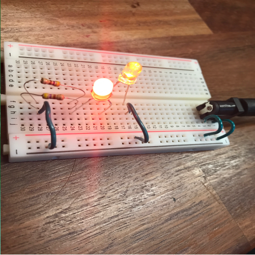
This circuit is in series.
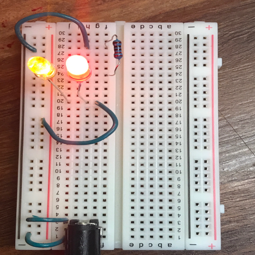
This circuit is in parellel.
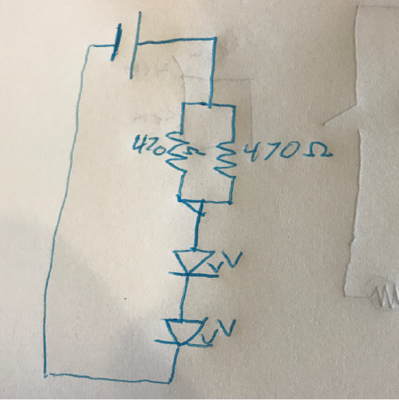
The diagram of the circuit for the protoboard.
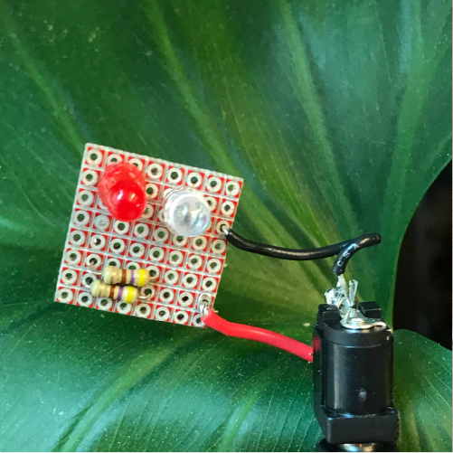
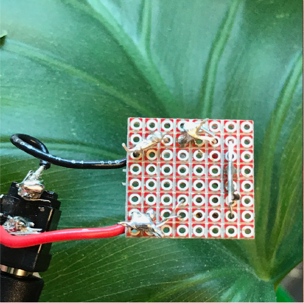
My protoboard after attatching the circuit.
Our First Lab
This assisgnment was to create a circut using a breadboard, then using what we learned, create a new circut within a creative enclosure. For my project I first created my breadboard circut, then, usiing 3 diodes in order to increase brightness, I created a flashlight.
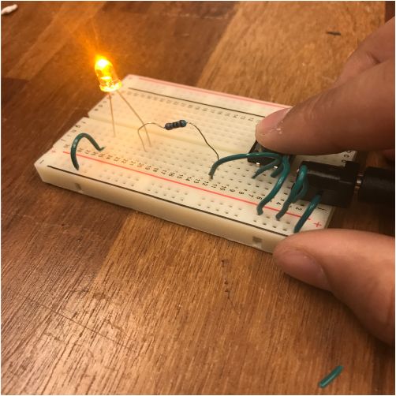
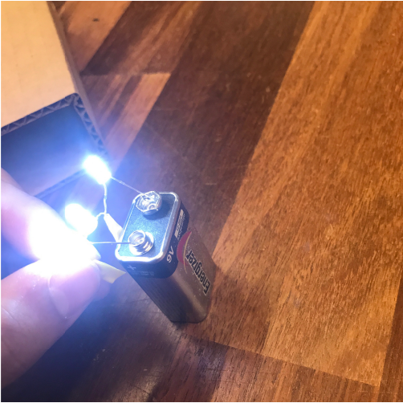
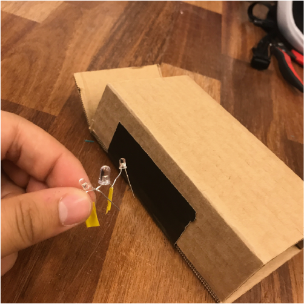
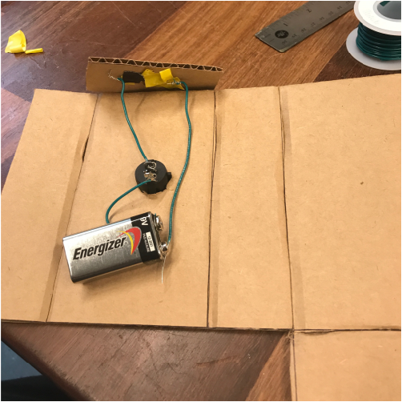
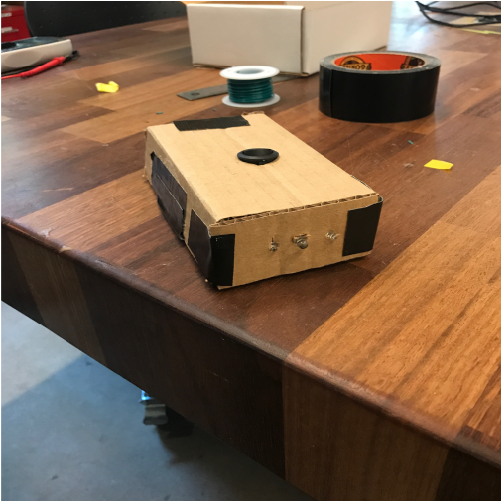
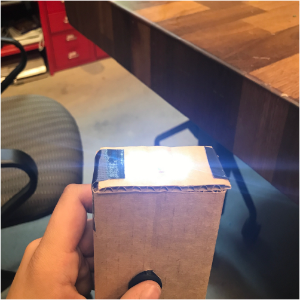
First Post
This is the first post I am making on this blog, today in class we worked on brainstorming and rapid prototyping. We dreamed up the Super Cooler, a machine which will keep drinks cold while doubliing as a bluetooth and aux based speaker, a wifi hotspot, some power outlets and a clock.